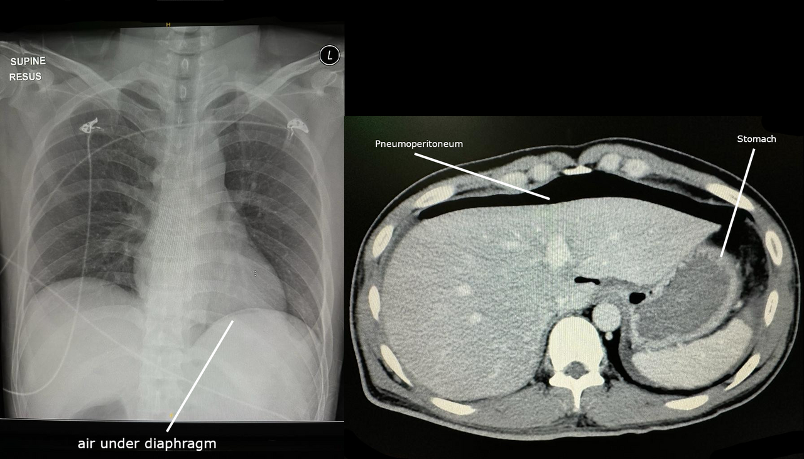

Sinz, Schmied et Ukegjini décrivent l' comme un état temporaire, car ce nom ne constitue pas un diagnostic.sinz_fms_2021-4
Cet état associe trois symptômes, puisque la douleur est soudaine, forte et persistante, avec une défense rigide et un trouble du péristaltisme.sinz_fms_2021-4
Le texte sépare donc l'abdomen aigu de la douleur abdominale aiguë d'origine indéterminée, lorsque le tableau reste incomplet.sinz_fms_2021-4
La littérature francophone emploie souvent les deux termes comme synonymes, cependant cette équivalence efface une différence utile.sinz_fms_2021-4
Les Hôpitaux universitaires de Genève décrivent la douleur aiguë comme des douleurs spontanées projetées sur l'abdomen depuis moins de 7 jours.hug_daa_2017-1
Cette borne de 7 jours vient du colloque genevois du 11 octobre 2017, car Dupuis et Ris citent Flament.hug_daa_2017-1
La stratégie genevoise de 2023 définit la douleur chronique comme continue ou intermittente depuis au moins 3 mois.hug_dac_2023-10
Le symptôme chronique n'est donc pas un abdomen aigu, puisque la durée dépasse le cadre de l'urgence immédiate.hug_dac_2023-3
Zahnd et ses collègues d'Unisanté rappellent que la douleur abdominale aiguë est un motif de consultation, car elle n'est pas une maladie unique.zahnd_rms_2024-12
Börner et ses collègues de Munich définissent l'abdomen aigu par une douleur maximale d'apparition soudaine, parfois avec une défense.boerner_2025-6
Le terme désigne ainsi un syndrome clinique et non une lésion d'organe, ce qui impose de chercher ensuite la cause.boerner_2025-6
On évite le mot péritonite pour toute défense, puisque la défense traduit une irritation péritonéale dont la cause reste à nommer.sinz_fms_2021-11
On évite aussi le diagnostic de douleur non spécifique tant qu'une cause grave n'est pas écartée, car cette étiquette est un reste.sinz_fms_2021-5
Le voisinage comprend la colique, la douleur pariétale et la douleur projetée thoracique, puisque ces mécanismes ne se recouvrent pas.sinz_fms_2021-8
Abdomen aigu selon Sinz, Forum Médical Suisse, 2021
La définition opératoire retient trois éléments conjoints, car l'absence de l'un d'eux change le nom du tableausinz_fms_2021-4.
La douleur doit être d'apparition soudaine, forte et persistante, donc un simple inconfort ancien ne suffit passinz_fms_2021-4.
La défense avec rigidité musculaire signe l'irritation de la paroi, ce qui rapproche le patient d'une cause chirurgicalesinz_fms_2021-4.
Le trouble du péristaltisme complète la triade, cependant son absence auscultatoire ne confirme pas un intestin normalsinz_fms_2021-11.
Le piège d'examen consiste à traiter le synonyme francophone comme une définition, puisque Sinz refuse cette fusionsinz_fms_2021-4.
2. Épidémiologie (Suisse, puis Europe)
Zahnd écrit que la douleur abdominale aiguë représente le 9e motif de consultation en médecine générale.zahnd_rms_2024-12
Un tiers des étiologies restent non spécifiques, cependant environ 10 % nécessitent un traitement hospitalier.zahnd_rms_2024-12
Une anamnèse précise donne un diagnostic correct dans 76 % des cas, car la palpation cherche ensuite un abdomen chirurgical.zahnd_rms_2024-12
Sinz indique qu'une prévalence exacte de l'abdomen aigu n'est pas disponible, puisque les causes sont documentées par organe.sinz_fms_2021-5
Jusqu'à 44,3 % des cas restent sans , et l'on parle alors de douleur abdominale non spécifique.sinz_fms_2021-5
Environ 10 % des cas relèvent de causes extra-intestinales, dès lors le thorax et le métabolisme restent dans le champ.sinz_fms_2021-5
L'appendicite aiguë représente 6,7 à 28,1 % des causes gastro-intestinales citées, ce qui la place en tête de liste.sinz_fms_2021-5
La cholécystite suit avec 2,9 à 31,5 %, car les fourchettes de la littérature se chevauchent et ne se trient pas.sinz_fms_2021-5
La hernie incarcérée compte pour 10 à 18,2 %, donc une cause mécanique fréquente garde un rang élevé.sinz_fms_2021-5
L'iléus mécanique couvre 4,1 à 45 %, ce qui montre une dispersion large selon les séries réunies par Sinz.sinz_fms_2021-5
La perforation du tractus gastro-intestinal représente 2,3 à 18 %, cependant sa gravité ne suit pas sa fréquence.sinz_fms_2021-5
L'hémorragie gastro-intestinale est chiffrée à 5 %, et l'occlusion vasculaire mésentérique à 9,4 %.sinz_fms_2021-5
La diverticulite représente 8,2 à 9 %, la pancréatite aiguë 3,2 à 4 %, et les maladies inflammatoires de l'intestin 0,6 %.sinz_fms_2021-5
Börner indique une incidence de l'abdomen aigu autour de 5 à 7 pour 1000 personnes et par an.boerner_2025-19
5 à 12 % des patients des urgences présentent une douleur abdominale aiguë, et jusqu'à un tiers nécessitent un traitement urgent.boerner_2025-19
Hors la douleur non spécifique, Börner décrit l'appendicite pour 8 à 30 % et une incidence de 100 pour 100 000.boerner_2025-20
La cholécystite y représente 9 à 11 % avec une incidence de 60 pour 100 000, dès lors son dénominateur diffère de celui de Sinz.boerner_2025-20
Le colloque genevois rapporte 10 % des consultations aux urgences, puisque Bouillot et Bressler sont cités pour 2004.hug_daa_2017-1
La colonne 2004 du colloque genevois sert de repère, car elle compare plusieurs séries de douleur abdominale.hug_daa_2017-2
Dans cette série, la douleur non spécifiée atteint 34,8 %, donc elle reste un reliquat et non un diagnostic.hug_daa_2017-3
La même colonne indique 7,5 % d'appendicite, 11 % de colique néphrétique et 4,3 % de pancréatite.hug_daa_2017-3
Avant 30 ans, le colloque décrit l'appendicite, les affections gynécologiques et la douleur non spécifiée en tête.hug_daa_2017-2
Après 70 ans, les hernies étranglées, les anévrismes rompus, les cancers, les sigmoïdites, les cholécystites et les péritonites dominent.hug_daa_2017-2
La mortalité de la chirurgie abdominale urgente reste de 2 à 12 % selon Börner, puisque chaque heure sans traitement pèse.boerner_2025-6
La stratégie genevoise rappelle que la prévalence de la douleur chronique est difficile à établir, dès lors elle ne se confond pas avec l'aigu.hug_dac_2023-5
Chiffres recopiés, dénominateurs séparés.
Indicateur
Valeur
Population
Source
Motif en médecine générale
9e motif
pratique de premier recours
Zahnd, Revue Médicale Suisse, 2024
Part hospitalière
environ 10 %
douleur abdominale aiguë en médecine générale
Zahnd, 2024
Anamnèse correcte
76 %
même article
Zahnd, 2024
Cause non déterminée
jusqu'à 44,3 %
abdomen aigu
Sinz, Forum Médical Suisse, 2021
Causes extra-intestinales
environ 10 %
abdomen aigu
Sinz, 2021
Appendicite aiguë
6,7 à 28,1 %
causes gastro-intestinales citées
Sinz, 2021
Incidence de l'abdomen aigu
5 à 7 pour 1000 par an
population
Börner, 2025
Douleur aux urgences
5 à 12 %
passages aux urgences
Börner, 2025
Pourquoi l'ordre suit la phrase de Sinz
Les fourchettes se chevauchent, donc un tri par médiane inventerait un rang que l'article ne donne passinz_fms_2021-5.
L'ordre retenu est celui de l'énumération, car Sinz écrit les causes les plus fréquentes dans cette suitesinz_fms_2021-5.
La douleur non spécifique atteint 44,3 %, cependant elle ne constitue pas un diagnostic concurrent distinctsinz_fms_2021-5.
Börner publie d'autres pourcentages aux urgences, ce qui interdit de fusionner les deux dénominateursboerner_2025-20.
Le piège consiste à citer 11 % de colique néphrétique comme rang suisse, puisque ce chiffre est une série de 2004hug_daa_2017-1.
La douleur non spécifique représente 30 à 41 % des douleurs aiguës aux urgences dans le tableau de Börner.boerner_2025-20
Börner décrit l'iléus pour 4 à 5 % des douleurs aiguës aux urgences, avec une incidence de 50 à 100 pour 100 000.boerner_2025-20
La pancréatite aiguë y représente 2 à 4 %, avec une incidence de 13 à 43 pour 100 000.boerner_2025-20
L'ulcère peptique, parfois perforé, représente 1 à 3 %, avec une incidence de 7 à 15 pour 100 000.boerner_2025-20
La diverticulite, parfois perforée, représente 1 à 2 %, avec une incidence de 150 à 160 pour 100 000.boerner_2025-20
L'ischémie abdominale représente 0 à 1 %, avec une incidence de 6 à 8 pour 100 000.boerner_2025-20
Un foyer gynécologique représente 1 à 4 % et un foyer urologique 2 à 4 % dans le même tableau.boerner_2025-20
Une cause oncologique représente 1 à 2 % des douleurs aiguës aux urgences, sans incidence chiffrée dans ce tableau.boerner_2025-20
Börner indique que la mortalité augmente à chaque heure sans traitement spécifique, au-delà de la fourchette de 2 à 12 %.boerner_2025-6
Börner ne sépare pas ici les cas pédiatriques et gériatriques, car l'article se concentre sur les causes fréquentes de l'adulte.boerner_2025-19
Les causes fréquentes qu'il retient incluent l'appendicite, la cholécystite, la pancréatite et la diverticulite, ainsi que les troubles moteurs.boerner_2025-19
Le traumatisme abdominal et les tumeurs de la cavité figurent aussi parmi les causes, dès lors le champ dépasse l'inflammation.boerner_2025-19
3. Physiopathologie
Sinz distingue , puisque le mécanisme viscéral, pariétal ou projeté oriente déjà l'organe.sinz_fms_2021-8
La douleur viscérale naît d'une distension, d'une tension, d'une torsion ou d'une contraction, donc elle reste médiocrement localisée.sinz_fms_2021-8
Proximalement au ligament de Treitz, cette douleur est perçue dans l'épigastre, car l'intestin antérieur s'y projette.sinz_fms_2021-8
Entre Treitz et l'angle colique droit, le territoire de l'artère mésentérique supérieure projette la douleur en péri-ombilical.sinz_fms_2021-8
Au-delà de l'angle droit, l'intestin terminal projette la douleur dans l'hypogastre, ce qui sépare le côlon gauche.sinz_fms_2021-8
La douleur somatique naît du péritoine, dès lors le patient la décrit comme aiguë ou lancinante et la localise mieux.sinz_fms_2021-8
La douleur projetée résulte d'une convergence d'afférences, ce qui explique une scapulalgie d'origine biliaire.sinz_fms_2021-8
Börner décrit la douleur viscérale comme sourde, profonde et souvent crampoïde, puisque la capsule ou le viscère creux se distend.boerner_2025-9
La douleur somatique est vive et brûlante, donc une perforation ou une cholécystite la produit plus qu'une simple colique.boerner_2025-9
L'irritation péritonéale provoque la défense, car toute vibration, la toux ou la palpation réveille la contraction.sinz_fms_2021-11
Si des signes inflammatoires s'y ajoutent, alors Sinz conclut à une péritonite, ce qui change l'urgence du contrôle du foyer.sinz_fms_2021-11
Le passage à la douleur pariétale marque l'irritation du péritoine, dès lors l'examen cherche la défense plutôt qu'un nouveau récit.boerner_2025-9
L'ischémie mésentérique masque souvent ses symptômes, puisque Sinz le signale chez l'enfant, le sujet âgé et l'immunodéprimé.sinz_fms_2021-9
Une corticothérapie participe à ce masque, ce qui impose de ne pas attendre une défense franche pour agir.sinz_fms_2021-9
Perturbation, exploration et traitement, d'après Sinz.
Perturbation
Ce que l'examen montre
Ce que le traitement corrige
Distension d'un viscère creux
Douleur viscérale mal localisée, selon l'étage embryonnaire
Lever l'obstacle ou la distension, après avoir nommé l'organe
Irritation du péritoine
Douleur somatique localisée, défense, douleur à la toux
Contrôle du foyer lorsque la péritonite est retenue
Convergence d'afférences
Douleur projetée à distance de l'organe
Traiter l'organe source, non la zone où la douleur est ressentie
Ischémie mésentérique
Symptômes souvent masqués, surtout chez le sujet âgé
Réduire le délai entre le début, le diagnostic et le traitement
Carte embryonnaire de la douleur viscérale
L'étage proximal au ligament de Treitz correspond à l'intestin antérieur, donc la douleur siège dans l'épigastresinz_fms_2021-8.
Le territoire de l'artère mésentérique supérieure correspond à l'intestin moyen, ce qui centre la douleursinz_fms_2021-8.
L'intestin terminal, après l'angle colique droit, projette la douleur vers l'hypogastre, ce qui sépare le côlon gauchesinz_fms_2021-8.
Un exemple est la douleur biliaire épigastrique initiale, car le foie et les voies biliaires relèvent de cet étagesinz_fms_2021-8.
Le piège est de conclure à une gastrite dès que la douleur est épigastrique, puisque l'étage ne nomme pas la maladiesinz_fms_2021-8.
4. Démarche diagnostique
La règle de Sinz limite l'intervalle entre le début des symptômes, le diagnostic et le traitement, car le temps aggrave le pronostic.sinz_fms_2021-7
L'occlusion des vaisseaux mésentériques reçoit le , puisque ses symptômes sont souvent masqués et le retard est meurtrier.sinz_fms_2021-9
La perforation reçoit le rang E2, car le choc septique impose un contrôle du foyer et une antibiothérapie sans délai.sinz_fms_2021-16
La hernie incarcérée reçoit le rang E3, puisque l'incarcération menace l'intestin et figure parmi les causes fréquentes citées.sinz_fms_2021-5
L'hémorragie gastro-intestinale reçoit le rang E4, car elle peut réaliser l'hypotension que Sinz traite comme une alarme.sinz_fms_2021-11
Ces quatre causes gardent pourtant leur rang de fréquence, dès lors E1 n'est pas le diagnostic le plus fréquent.sinz_fms_2021-5
L'appendicite aiguë constitue la tête de liste, puisque Sinz la décrit la première parmi les causes gastro-intestinales.sinz_fms_2021-5
Le diagnostic clinique seul atteint une sensibilité de 88 % et une spécificité de 41 %, ce qui ne dispense pas de l'imagerie ciblée.sinz_fms_2021-7
Une étude de 1000 patients retient comme facteurs chirurgicaux une douleur de moins de 48 heures et une défense.sinz_fms_2021-9
Les vomissements après la douleur, l'âge d'au moins 65 ans et une chirurgie antérieure complètent ces facteurs.sinz_fms_2021-9
Börner confirme une sensibilité de 88 % et une spécificité de 41 % pour l'histoire et l'examen bien conduits.boerner_2025-16
La tomodensitométrie confirme le diagnostic clinique dans plus de 70 % des cas d'appendicite, selon le même article.boerner_2025-16
Dix concurrents et cinq colonnes, dans l'ordre écrit par Sinz.
Signe clé
Examen qui tranche
Mécanisme
Conduite immédiate
Rang E
DX.1 Appendicite aiguë : douleur qui se déplace, avec défense de la fosse iliaque droite
Échographie, puis tomodensitométrie si le doute persiste
Inflammation appendiculaire, puis irritation péritonéale
Stratifier le risque et ne pas retarder le contrôle si la forme est compliquée
Fréquent, sans rang E
DX.2 Cholécystite : douleur de l'hypocondre droit et signe de Murphy
Échographie des voies biliaires
Inflammation vésiculaire
Imagerie biliaire, car l'échographie y est plus sensible que la tomodensitométrie
Sans rang E
DX.3 Hernie incarcérée : voussure douloureuse et irréductible à un orifice
Inspection et palpation des orifices
Incarcération, avec risque d'ischémie intestinale
Lever l'incarcération en urgence si le tableau est étranglé
E3
DX.4 Iléus mécanique : arrêt des gaz, vomissements et météorisme
Tomodensitométrie si l'examen ne tranche pas
Obstacle mécanique
Chercher une strangulation, qui rejoint alors la voie de la perforation
Sans rang E propre
DX.5 Perforation : défense diffuse et douleur à la toux
Air libre, surtout sur le cliché qui le montre
Irruption du contenu digestif dans le péritoine
Contrôle du foyer, et antibiotique dans l'heure si le sepsis est identifié
E2
DX.6 Hémorragie gastro-intestinale : instabilité et extériorisation de sang
Constantes, puis endoscopie selon la porte d'entrée
Perte sanguine
Remplissage et hémostase si la pression systolique est basse
E4
DX.7 Occlusion des vaisseaux mésentériques : douleur intense et symptômes souvent pauvres
Tomodensitométrie avec injection, et lactate dans le bilan
Ischémie intestinale
Réduire le délai diagnostique, puisque le tableau est masqué
E1
DX.8 Diverticulite : douleur de la fosse iliaque gauche et fièvre
Tomodensitométrie, plus sensible que l'échographie pour cette question
Inflammation diverticulaire
Distinguer la forme locale de la perforation libre
Lipase, puis imagerie si le doute ou la gravité l'exigent
Activation enzymatique pancréatique
Bilan de Sinz, qui inclut la lipase et l'amylase
Sans rang E
DX.10 Maladies inflammatoires de l'intestin : douleur et trouble du transit
Le diagnostic de poussée ne se pose pas sur la seule douleur aiguë
Inflammation chronique de la paroi
Ne pas les confondre avec une perforation, qui reste E2
Sans rang E
Pourquoi E1 n'est pas le diagnostic le plus fréquent
L'occlusion mésentérique est citée à 9,4 %, donc elle n'ouvre pas la liste de fréquencesinz_fms_2021-5.
Elle passe pourtant en tête de l'algorithme, car les symptômes sont souvent masquéssinz_fms_2021-9.
Une autopsie de 2121 cas a retrouvé un abdomen aigu non détecté dans 5 % des décès après 70 anssinz_fms_2021-11.
Le piège est de rassurer un sujet âgé peu douloureux, puisque la pauvreté des signes ne diminue pas le risquesinz_fms_2021-11.
La conduite positive est de réduire l'intervalle jusqu'au traitement, comme Sinz le formule en règle d'orsinz_fms_2021-7.
5. Anamnèse ciblée et drapeaux rouges
Sinz fait poser , car le moment, le mode, la durée, le pourquoi et le lieu structurent le récit.sinz_fms_2021-8
Le moment cherche l'événement déclenchant et le caractère nocturne, dès lors une perforation se sépare d'une douleur ancienne.sinz_fms_2021-8
Le mode décrit le caractère et l'irradiation, ce qui distingue une colique d'une douleur pariétale fixe.sinz_fms_2021-8
La durée précise le début et l'évolution, puisqu'une douleur de moins de 48 heures pèse vers une cause chirurgicale.sinz_fms_2021-9
Le pourquoi relie la douleur aux maladies antérieures et aux médicaments, donc les anti-inflammatoires orientent vers l'ulcère.sinz_fms_2021-8
Le lieu sur l'abdomen utilise la carte embryonnaire, ce qui évite de nommer un organe sur la seule topographie.sinz_fms_2021-8
Börner demande le début, la durée, le site, l'intensité et la nature, car la douleur viscérale est sourde et la somatique vive.boerner_2025-9
Il faut demander si la douleur s'est déplacée, puisque ce trajet est typique de l'appendicite dans cet article.boerner_2025-9
L'anorexie, les nausées, les vomissements, la fièvre, la diarrhée ou la constipation accompagnent le récit et changent la probabilité.boerner_2025-9
Les médicaments et les antécédents font partie de l'histoire, dès lors une chirurgie ancienne oriente vers l'occlusion.sinz_fms_2021-9
Une douleur thoracique, une dyspnée ou un saignement vaginal évoquent une cause extra-abdominale, ce qui ouvre le tableau de Sinz.sinz_fms_2021-10
Zahnd accorde 76 % de diagnostics corrects à une anamnèse précise, cependant ce chiffre ne remplace pas l'examen.zahnd_rms_2024-12
La stratégie chronique des Hôpitaux universitaires de Genève impose aussi une anamnèse détaillée, car une néoplasie peut manquer de symptômes B.hug_dac_2023-3
Un changement récent du transit fait chercher cette néoplasie même avant 50 ans, donc l'âge seul ne rassure pas.hug_dac_2023-3
Drapeaux et action, d'après les seuils lus.
Drapeau
Signification
Action immédiate
Fréquence cardiaque supérieure à 95 par minute
Sinz associe cette tachycardie à une morbidité accrue dans l'abdomen aigu
Traiter le patient comme instable jusqu'à preuve du contraire
Pression artérielle systolique de 90 mm Hg ou moins
Hypotension associée à une morbidité et à une mortalité accrues
Remplissage et recherche d'une hémorragie ou d'un sepsis
Température corporelle inférieure à 36,5 °C
Hypothermie dans le même cadre d'alarme
Ne pas attendre un frisson fébrile pour engager la réanimation
Douleur depuis moins de 48 heures, suivie de vomissements, avec défense
Facteurs de cause chirurgicale dans une série de 1000 patients
Poursuivre vers l'imagerie et l'avis chirurgical
Âge d'au moins 65 ans
Le même travail identifie l'âge avancé comme facteur chirurgical
Abaisser le seuil de la tomodensitométrie
Sujet âgé, enfant, immunodépression ou corticoïde
Les symptômes d'ischémie et d'infection sont souvent masqués
Ne pas exiger une défense franche pour engager le bilan
Les cinq questions de Sinz
Quand cherche l'heure et l'événement, puisqu'une perforation se distingue d'une douleur qui traînesinz_fms_2021-8.
Comment décrit le caractère et l'irradiation, dès lors la colique ne se raconte pas comme une brûlure fixesinz_fms_2021-8.
Combien de temps fixe le début et la pente, ce qui rejoint le seuil de 48 heuressinz_fms_2021-9.
Pourquoi explique le lien avec les médicaments, car un anti-inflammatoire change la probabilité d'ulcèresinz_fms_2021-8.
Où utilise la carte de l'abdomen, cependant le lieu ressenti n'est pas toujours le lieu de la lésionsinz_fms_2021-8.
Des maux de dos peuvent accompagner une cause extra-abdominale, donc Sinz prévoit d'impliquer une autre discipline.sinz_fms_2021-10
6. Examen physique ciblé, région par région
Le normal précède le pathologique, puisque Sinz mesure d'abord le pouls, la pression, la respiration, la température et la vigilance.sinz_fms_2021-11
Une fréquence cardiaque supérieure à 95 par minute constitue une alarme, dès lors l'examen local vient après les constantes.sinz_fms_2021-11
Une pression systolique de 90 mm Hg ou moins, ou une température sous 36,5 °C, augmente la morbidité dans ce cadre.sinz_fms_2021-11
L'inspection cherche la , car le patient péritonéal replie les jambes.sinz_fms_2021-11
Les cicatrices, les hernies, les stomies et l'ictère se voient avant la palpation, ce qui évite de manquer un orifice.sinz_fms_2021-11
L'auscultation reste obligatoire, cependant l'absence de bruits n'exclut pas une fonction intestinale normale.sinz_fms_2021-11
Les études ne confirment aucune concordance entre examinateurs pour des bruits dits normaux, réduits ou augmentés.sinz_fms_2021-11
L'auscultation aide néanmoins au diagnostic d'iléus, donc on la garde sans lui donner un seuil chiffré inexistant.sinz_fms_2021-11
La palpation recherche la défense, la douleur à la décompression et le péritonisme, puisqu'elle juge l'urgence.sinz_fms_2021-11
La palpation profonde recherche une hypertrophie du foie, de la rate, de la vésicule ou de la vessie.sinz_fms_2021-11
La toux, le choc du lit ou une percussion légère reproduisent la douleur péritonéale, ce qui confirme l'irritation.sinz_fms_2021-11
Chez le sujet âgé peu musclé, ces signes manquent souvent, dès lors un abdomen souple n'élimine pas la cause.sinz_fms_2021-11
Börner décrit l'inspection, puis l'auscultation des quatre quadrants, puis la percussion et la palpation.boerner_2025-10
Le point de McBurney, décrit en 1889, est spécifique de 50 à 80 % et sensible jusqu'à 45 %.boerner_2025-16
Le signe de Murphy, décrit en 1903, est spécifique de 62 à 97 % et sensible de 47 à 96 %.boerner_2025-16
Börner rappelle que l'analgésie précoce ne gêne pas l'évaluation clinique, donc la douleur se traite avant la fin du bilan.boerner_2025-10
Les orifices herniaires se palpent, car le colloque genevois et Sinz font de la hernie un diagnostic visible.sinz_fms_2021-11
Technique de la défense
Le patient est allongé, puisque la posture en chien de fusil se juge avant toute pressionsinz_fms_2021-11.
On demande une toux, dès lors la douleur provoquée traduit l'irritation sans appuyer fortsinz_fms_2021-11.
Une percussion légère suffit souvent, ce qui évite une palpation brutale sur un abdomen déjà contractésinz_fms_2021-11.
La valeur diminue chez le sujet âgé, car une série autopsique a manqué 5 % d'abdomens aigus après 70 anssinz_fms_2021-11.
Le piège est de conclure à l'absence de péritonite parce que les bruits existent, puisque l'auscultation n'a pas de seuil consensuelsinz_fms_2021-11.
La palpation de la paroi est la partie la plus importante de l'examen, car elle juge la défense et l'urgence du traitement.sinz_fms_2021-11
Des critères définitifs des bruits intestinaux doivent encore être déterminés, puisqu'aucune méthode standard ne fait consensus.sinz_fms_2021-11
7. Approche syndromique
7.1 Abdomen aigu
Le est l'abdomen aigu de Sinz, car la triade réunit douleur, défense et trouble du péristaltisme.sinz_fms_2021-4
Ses signes fonctionnels sont la douleur soudaine et les vomissements, et ses signes physiques sont la rigidité et la posture antalgique.sinz_fms_2021-11
Le geste est la recherche de la douleur à la toux, puisque ce signe relie l'irritation péritonéale au mécanisme pariétal.sinz_fms_2021-11
7.2 Douleur viscérale
Le deuxième syndrome est la douleur viscérale pure, donc elle est mal localisée et suit l'étage embryonnaire.sinz_fms_2021-8
7.3 Douleur somatique
Le troisième syndrome est la douleur somatique localisée, car le patient désigne un point et la défense s'y limite.sinz_fms_2021-8
7.4 Douleur projetée
Le quatrième syndrome est la douleur projetée, ce qui explique une plainte thoracique ou scapulaire d'origine abdominale.sinz_fms_2021-8
7.5 Instabilité
Le cinquième syndrome est l'instabilité, puisque la tachycardie, l'hypotension ou l'hypothermie précèdent le diagnostic.sinz_fms_2021-11
7.6 Tableau masqué
Le sixième syndrome est le masque du sujet fragile, dès lors l'enfant, le sujet âgé et le patient sous corticoïde restent suspects.sinz_fms_2021-9
7.7 Douleur chronique
Le septième syndrome est la douleur chronique depuis au moins 3 mois, car la stratégie genevoise la sépare de l'urgence.hug_dac_2023-3
Dans ce cadre chronique, le syndrome de l'intestin irritable repose sur les critères de Rome IV mis à jour en 2016.hug_dac_2023-36
Börner décrit le sepsis abdominal jusqu'à 26 % de mortalité, et jusqu'à 43 % si le traitement est retardé.boerner_2025-17
Le qSOFA retient un Glasgow inférieur à 15, une fréquence respiratoire d'au moins 22 par minute et une systolique de 100 mm Hg ou moins.boerner_2025-17
Syndromes numérotés.
Syndrome
Signes fonctionnels
Signes physiques
7.1 Abdomen aigu
Douleur soudaine, forte, persistante
Défense rigide et trouble du péristaltisme
7.2 Douleur viscérale
Crampe, nausée, mauvaise localisation
Abdomen encore souple au début
7.3 Douleur somatique
Douleur fixe, aiguë ou lancinante
Défense, douleur à la toux
7.4 Douleur projetée
Plainte à distance de l'organe
Zone douloureuse sans lésion locale obligatoire
7.5 Instabilité
Malaise, soif, confusion
Tachycardie, hypotension ou hypothermie
7.6 Tableau masqué
Plainte pauvre chez le sujet fragile
Défense absente malgré une cause grave
7.7 Douleur chronique
Douleur continue ou intermittente depuis au moins 3 mois
Examen souvent pauvre, drapeaux à chercher quand même
qSOFA selon Börner
Le score simplifié cherche un trouble de vigilance, puisque le Glasgow est alors inférieur à 15boerner_2025-17.
Une fréquence respiratoire d'au moins 22 par minute constitue le deuxième itemboerner_2025-17.
Une pression systolique de 100 mm Hg ou moins constitue le troisième itemboerner_2025-17.
Jusqu'à 66 % des patients chirurgicaux septiques ont leur foyer dans l'abdomen, donc la question se pose d'embléeboerner_2025-17.
Le piège est d'attendre la fièvre, car l'hypothermie de Sinz est déjà une alarme à 36,5 °Csinz_fms_2021-11.
8. Diagnostic positif et critères
Sinz fixe la triade de l'abdomen aigu, dès lors la douleur isolée ne suffit pas à porter ce nom.sinz_fms_2021-4
La douleur d'origine indéterminée reste un autre cadre, puisqu'elle ne réunit pas la défense et le trouble du péristaltisme.sinz_fms_2021-4
La sensibilité clinique de 88 % et la spécificité de 41 % disent ce que l'examen peut et ne peut pas affirmer.sinz_fms_2021-7
Une spécificité de 41 % signifie que l'examen seul ne confirme pas la cause, donc l'imagerie reste nécessaire si le doute persiste.sinz_fms_2021-7
Les facteurs chirurgicaux de la série de 1000 patients ne sont pas un score nommé, cependant ils structurent la probabilité.sinz_fms_2021-9
Börner date le point de McBurney de 1889 et le signe de Murphy de 1903, car ces manœuvres gardent une valeur chiffrée.boerner_2025-16
McBurney ne confirme pas l'appendicite à lui seul, puisque sa sensibilité ne dépasse pas 45 % dans cette synthèse.boerner_2025-16
Murphy ne confirme pas non plus toute cholécystite, car sa sensibilité peut descendre à 47 %.boerner_2025-16
La stratégie genevoise date les critères de Rome IV de 2016 pour le syndrome de l'intestin irritable.hug_dac_2023-36
Ces critères ne s'appliquent pas à l'abdomen aigu, dès lors on ne les utilise pas pour éviter une imagerie urgente.hug_dac_2023-3
Börner indique que la tomodensitométrie confirme le diagnostic clinique d'appendicite dans plus de 70 % des cas.boerner_2025-16
Ce pourcentage ne constitue pas un critère diagnostique autonome, puisqu'il mesure l'accord avec la clinique.boerner_2025-16
Ce tableau indique ce qui suffit, et ce qui ne suffit pas.
Critère
Année et source
Ce qu'il permet
Ce qu'il ne permet pas
Triade douleur, défense, trouble du péristaltisme
Sinz, Forum Médical Suisse, 2021
Nommer un abdomen aigu
Nommer l'organe
Sensibilité 88 % et spécificité 41 % de la clinique
Sinz, 2021, et Börner, 2025
Savoir que l'examen oriente
Affirmer la cause sans autre examen
McBurney, spécificité 50 à 80 %, sensibilité jusqu'à 45 %
Börner, rappel de 1889
Renforcer une suspicion d'appendicite
Écarter l'appendicite s'il est absent
Murphy, spécificité 62 à 97 %, sensibilité 47 à 96 %
Börner, rappel de 1903
Renforcer une suspicion biliaire
Remplacer l'échographie
Rome IV
Stratégie des HUG, mise à jour 2016
Structurer une douleur chronique fonctionnelle
Classer un abdomen aigu
9. Examens complémentaires
9.a Gold standard
Sinz ne désigne pas un seul examen comme étalon pour tout abdomen aigu, car la cause décide de la modalité.sinz_fms_2021-14
La clinique reste le point de départ, cependant sa spécificité de 41 % interdit de s'y arrêter si le risque est réel.sinz_fms_2021-7
Lorsque l' est démontré et que le tableau colle, l'indication opératoire peut être posée sans autre examen.sinz_fms_2021-14
9.b Première intention
Le bilan de Sinz comprend l'hémogramme, la protéine C réactive, le bilan hépatique, la lipase ou l'amylase, les électrolytes et le glucose.sinz_fms_2021-12
Le lactate, la coagulation et l'analyse d'urine avec sédiment complètent ce premier bilan, puisque la cause est encore ouverte.sinz_fms_2021-12
Chez la femme en âge de procréer, un test de grossesse est exigé, donc une grossesse extra-utérine n'est pas oubliée.sinz_fms_2021-12
L'échographie vient ensuite, car elle est non irradiante, répétable, et utile pour le liquide, la perfusion et la vésicule.sinz_fms_2021-14
Sa sensibilité se situe entre 67 et 74 % et sa spécificité entre 81 et 88 %, dès lors l'examinateur limite la performance.sinz_fms_2021-14
L'obésité, le manque de coopération et l'air gênent l'échographie, ce qui conduit alors à la tomodensitométrie.sinz_fms_2021-14
9.c Alternatives
Chez la femme enceinte, si l'échographie ne tranche pas, Sinz recommande l'imagerie par résonance magnétique.sinz_fms_2021-14
Une de 10 mGy augmenterait de 40 % l'incidence des cancers de l'enfance, donc le choix de modalité compte.sinz_fms_2021-14
Le produit de contraste iodé se discute si le débit de filtration estimé dépasse 45 mL par minute et par 1,73 mètre carré.sinz_fms_2021-14
En dessous de ce seuil, le risque de néphropathie n'est plus qualifié de minime par la synthèse de Sinz.sinz_fms_2021-14
Chez le patient instable, le diagnostic rapide prime sur ce risque, dès lors l'injection n'est pas refusée pour ce seul motif.sinz_fms_2021-14
9.d Deuxième intention
La tomodensitométrie avec injection intraveineuse atteint une sensibilité jusqu'à 94 % et une spécificité jusqu'à 77 %.sinz_fms_2021-14
Le contraste oral ou rectal n'augmente pas utilement la précision en urgence et allonge le délai, donc Sinz ne le retient pas.sinz_fms_2021-14
La tomodensitométrie dépasse l'échographie pour l'appendicite, la diverticulite, la pancréatite, la perforation, l'iléus et l'ischémie.sinz_fms_2021-14
L'échographie reste plus sensible pour les voies biliaires, ce qui réserve la tomodensitométrie aux questions qu'elle tranche mieux.sinz_fms_2021-14
La radiographie conventionnelle ne change le diagnostic que dans 4 à 7,2 % des douleurs aiguës, dès lors elle n'est plus l'examen de base.sinz_fms_2021-14
Dans une étude de 1021 personnes, le diagnostic clinique reste identique après la radiographie d'abdomen.sinz_fms_2021-14
La dose d'une tomodensitométrie abdominale atteint jusqu'à 10 mSv, et le risque de cancer radio-induit est jugé très faible chez l'adulte.sinz_fms_2021-14
Après 65 ans, une série de 380 patients a compté 5 % de décès et 22 % de traitements chirurgicaux, donc le seuil d'imagerie baisse.sinz_fms_2021-14
L'endoscopie et l'angiographie ne sont pas des examens de routine de l'abdomen aigu selon Sinz, puisqu'elles répondent à une question précise.sinz_fms_2021-14
Interprétation des résultats cités.
Résultat
Signification
Conduite
Air libre démontré
Perforation d'organe creux possible
L'indication opératoire peut être posée sans examen supplémentaire si le tableau clinique concorde
Échographie non contributive
Sensibilité limitée, entre 67 et 74 %
Passer à la tomodensitométrie, surtout si l'obésité ou l'air gênent
Tomodensitométrie positive pour une cause chirurgicale
Sensibilité jusqu'à 94 %
Engager le traitement de la cause, sans refaire une radiographie simple
Débit de filtration estimé supérieur à 45
Risque de néphropathie de contraste qualifié de minime
L'injection intraveineuse reste acceptable dans ce cadre
Lactate et instabilité
Le bilan de Sinz inclut le lactate
Ne pas attendre le résultat pour commencer la réanimation
Cliché. Le fichier juxtapose une radiographie thoracique en décubitus, où se lisent SUPINE, RESUS et le marqueur L, et une coupe de tomodensitométrie déjà légendée par l'auteur.

On cherche d'abord soi-même le signe sur la radiographie brute, puisque les repères numérotés viennent ensuite.
La copie annotée garde les pixels d'origine, et elle superpose trois cercles sur les mentions déjà imprimées.
Lecture guidée.
Le repère n° 3 désigne la structure que l'auteur a déjà nommée Stomach, et ce cercle ne mesure aucun organe.
Le repère n° 1 reprend la légende déjà imprimée « air under diaphragm », puisque cette mention est celle de l'auteur.
Le repère n° 2 reprend la bande que l'auteur appelle Pneumoperitoneum, et ce cercle ne date pas l'air.
Pièges. L'image ne nomme pas l'organe perforé, puisque l'air libre reste compatible avec un ulcère, un diverticule ou un traumatisme.sinz_fms_2021-14
La description du fichier situe l'air sous le diaphragme gauche, cependant la latéralité reste non tranchée au-delà de cette description.
Aucun diamètre et aucune date de perforation ne se lisent sur ce cliché.
Ce que l'image décide : lorsque la clinique concorde avec l'air libre, le rang E2 conduit au contrôle du foyer, sans dispenser de la réanimation si le patient est instable.sinz_fms_2021-14
Cerevisae, licence CC BY-SA 4.0, Wikimedia Commons, fichier « Chest X-ray showing presence of free air under left diaphragm.png », page du fichier, consulté le 2026-11-10. La copie annotée est une œuvre dérivée sous la même licence.
Ce signe sépare la perforation, qui est le rang E2, des douleurs sans air libre, car Sinz relie l'air libre à l'opération.sinz_fms_2021-14
Sinz retient le cliché debout ou le décubitus latéral gauche pour l'air libre, puisque la position change sa visibilité.sinz_fms_2021-14
Un air libre acquis peut indiquer l'opération sans autre examen, ce qui ne dispense pas de réanimer le patient instable.sinz_fms_2021-14
Le piège est d'en déduire l'organe, car l'air ne dit pas si la perforation est ulcéreuse, diverticulaire ou traumatique.sinz_fms_2021-14
Air libre et décision opératoire
Sinz retient le cliché debout ou le décubitus latéral gauche, puisque l'air libre s'y cherche avant la tomodensitométriesinz_fms_2021-14.
Si l'air libre est démontré et que la clinique concorde, l'indication opératoire peut se poser sans examen supplémentairesinz_fms_2021-14.
Le diagnostic ne reste modifié par la radiographie conventionnelle que dans 4 à 7,2 % des douleurs aiguëssinz_fms_2021-14.
Cette étude de 1021 personnes montre que le diagnostic clinique reste inchangé après le cliché simplesinz_fms_2021-14.
Le piège est de croire que l'air nomme l'organe perforé, car il ne remplace ni les constantes ni le récitsinz_fms_2021-14.
Contraste et irradiation, selon Sinz
Une tomodensitométrie abdominale expose jusqu'à 10 mSv, et le risque de cancer radio-induit est jugé très faible chez l'adultesinz_fms_2021-14.
Une exposition fœtale de 10 mGy augmenterait de 40 % l'incidence des cancers de l'enfancesinz_fms_2021-14.
Le risque de néphropathie est qualifié de minime si le débit de filtration estimé dépasse 45 mL par minutesinz_fms_2021-14.
Chez le patient instable, le diagnostic rapide prime, dès lors l'injection n'est pas refusée pour ce seul motifsinz_fms_2021-14.
Après 65 ans, une série de 380 patients a compté 5 % de décès et 22 % d'opérations, donc le seuil d'imagerie baissesinz_fms_2021-14.
Au moins un tiers des patients a des manifestations atypiques, dès lors le laboratoire complète un examen qui peut tromper.sinz_fms_2021-12
Le bilan recommandé comprend la bilirubine, les transaminases, la gamma-glutamyltransférase et la phosphatase alcaline.sinz_fms_2021-12
Ces enzymes servent aussi de valeur de référence pour suivre l'évolution, puisque Sinz ne les réserve pas au seul diagnostic initial.sinz_fms_2021-12
10. Arbre décisionnel
L'algorithme part de , car l'occlusion mésentérique se recherche avant les causes plus fréquentes.sinz_fms_2021-9
Si la pression systolique est de 90 mm Hg ou moins, alors la réanimation commence et l'hémorragie ou le sepsis se recherche.sinz_fms_2021-11
Si la douleur est intense et le ventre pauvre, surtout après 65 ans, alors E1 mène à une tomodensitométrie injectée.sinz_fms_2021-9
Si une défense diffuse ou un air libre apparaît, alors E2 conduit au contrôle du foyer sans série radiologique supplémentaire.sinz_fms_2021-14
Si un orifice herniaire est douloureux et irréductible, alors E3 impose de traiter l'incarcération.sinz_fms_2021-11
Si le sang s'extériorise avec une instabilité, alors E4 oriente vers l'hémostase après la mise en condition.sinz_fms_2021-11
Si les gaz sont arrêtés sans défense, alors l'iléus mécanique se confirme par l'imagerie et l'on cherche une strangulation.sinz_fms_2021-11
Si la douleur migre vers la fosse iliaque droite, alors l'appendicite constitue la branche la plus fréquente.sinz_fms_2021-5
Si le signe de Murphy est présent, alors l'échographie biliaire cherche la cholécystite, puisqu'elle y surpasse la tomodensitométrie.sinz_fms_2021-14
Si la fosse iliaque gauche est inflammatoire, alors la diverticulite se distingue de la perforation libre par l'imagerie.sinz_fms_2021-14
Si la lipase est élevée avec une douleur transfixiante, alors la pancréatite entre dans le bilan que Sinz a listé.sinz_fms_2021-12
Si aucune de ces branches ne tranche, alors la laparoscopie diagnostique n'intervient qu'après l'échec de l'imagerie.sinz_fms_2021-18
Algorithme, les graves d'abord, en commençant par E1.
Si
Alors
La pression systolique est de 90 mm Hg ou moins
La réanimation commence, et l'hémorragie ou le sepsis se recherche
La douleur est intense et le ventre pauvre, surtout après 65 ans
E1 conduit à une tomodensitométrie injectée si le patient peut la recevoir
Une défense diffuse ou un air libre apparaît
E2 conduit au contrôle du foyer sans série radiologique supplémentaire
Un orifice herniaire est douloureux et irréductible
E3 impose de traiter l'incarcération
Le sang s'extériorise avec une instabilité
E4 oriente vers l'hémostase après la mise en condition
Les gaz sont arrêtés sans défense
L'iléus mécanique se confirme par l'imagerie, et l'on cherche une strangulation
La douleur migre vers la fosse iliaque droite
L'appendicite, DX.1, constitue la branche la plus fréquente
Le signe de Murphy est présent
L'échographie biliaire cherche la cholécystite
La fosse iliaque gauche est inflammatoire
La diverticulite se distingue de la perforation libre
La lipase est élevée avec une douleur transfixiante
La pancréatite entre dans le bilan
Aucune branche ne tranche
La laparoscopie diagnostique n'intervient qu'après l'échec de l'imagerie
Laparoscopie seulement en dernier
Sinz la réserve au diagnostic encore incertain après les examens non invasifs, donc elle n'ouvre pas l'arbresinz_fms_2021-18.
Sa précision diagnostique va de 70 à 99 % dans les séries qu'il citesinz_fms_2021-18.
Elle modifie la stratégie dans 10 à 58 % des cas et traite jusqu'à 83 % des patients dans le même tempssinz_fms_2021-18.
Un taux de conversion de 8 % est rapporté, ce qui se dit au patient avant le gesteaips-47503-9.
Pendant la grossesse, un accouchement prématuré ou un avortement peut survenir dans jusqu'à 6 % des laparoscopies citéesaips-47503-9.
La Society of American Gastrointestinal Surgeons admet la laparoscopie lorsque les examens non invasifs sont épuisés.sinz_fms_2021-18
Le diagnostic doit alors rester incertain, car cette société ne place pas la laparoscopie avant l'imagerie.sinz_fms_2021-18
11. Prise en charge selon les recommandations suisses
11.A But
Le but immédiat est de réduire l'intervalle jusqu'au traitement, puisque Sinz en fait la règle d'or de l'abdomen aigu.sinz_fms_2021-7
Chaque heure supplémentaire avant l'antibiotique, lorsque le sepsis est identifié, est associée à une hausse de mortalité de 7,6 %.sinz_fms_2021-17
L'antibiotique doit donc être administré dans l' qui suit l'identification des symptômes de sepsis.sinz_fms_2021-17
11.B Moyens
Sinz sépare le traitement de stabilisation, comme le remplissage et l'analgésie, du traitement de la cause.sinz_fms_2021-16
Börner indique que l'analgésie précoce ne gêne pas l'examen, dès lors on ne laisse pas le patient sans traitement de la douleur.boerner_2025-10
est indiqué pour des douleurs d'intensité faible à modérée, ce qui ne couvre pas à lui seul un abdomen aigu sévère.aips-47503-2
La dose journalière maximale de paracétamol oral ne doit pas dépasser 4000 mg, car l'information professionnelle le fixe ainsi.aips-47503-2
Au-dessus de 40 kg, la prise va de 500 à 1000 mg, et le maximum indiqué est de 4 g.aips-47503-3
L'intervalle entre deux prises orales est de 4 à 8 heures chez l'adulte, puisque le texte fixe cette borne.aips-47503-3
Les comprimés pelliculés de 1 g exigent un poids supérieur à 50 kg, car en dessous ils exposent à un surdosage.aips-47503-4
Lorsque la voie orale est impossible, Dafalgan intraveineux traite une douleur légère à modérée, par une perfusion de 15 minutes.aips-66702-2
Au-dessus de 50 kg, la dose intraveineuse est de 1 g par administration, jusqu'à 4 fois par jour, sans dépasser 4 g en 24 heures.aips-66702-2
De 33 à 50 kg, la dose intraveineuse est de 15 mg par kg, au plus 4 fois par jour.aips-66702-2
Dans cette tranche de poids, la dose sur 24 heures ne dépasse pas 60 mg par kg, puisque le texte fixe ce plafond.aips-66702-2
L'intervalle minimal intraveineux est de 4 heures, et la préparation est réservée aux patients de plus de 33 kg.aips-66702-2
Liquid Caps 400 n'a pas la douleur abdominale parmi ses indications, donc il n'est pas l'antalgique de ce syndrome.aips-65372-2
Il est contre-indiqué en cas d'ulcère ou d'hémorragie gastro-intestinale et en cas de maladie inflammatoire intestinale.aips-65372-2
Sa dose maximale d'automédication est de 1200 mg par jour pendant 3 jours au plus, ce qui ne constitue pas un protocole d'abdomen aigu.aips-65372-2
Le troisième trimestre de la grossesse contre-indique cet ibuprofène, dès lors on ne l'ajoute pas chez une femme enceinte douloureuse.aips-65372-2
Pour une péritonite communautaire sans facteur de risque, Sinz retient une céphalosporine de deuxième génération ou une fluoroquinolone, avec le métronidazole.sinz_fms_2021-17
L'alternative est une aminopénicilline avec un inhibiteur de bêta-lactamase, car l'article cite l'amoxicilline associée à l'acide clavulanique.sinz_fms_2021-17
Aucune dose en milligrammes n'est recopiée pour ces antibiotiques, puisque leur information professionnelle suisse n'a pas été ouverte dans ce lot.sinz_fms_2021-17
Une administration unique suffit souvent pour une péritonite locale, et l'arrêt se discute après trois jours si l'état s'améliore.sinz_fms_2021-17
Pour une péritonite locale avancée avec foyer contrôlé, 4 à 5 jours ne font pas pire que 8 à 10 jours.sinz_fms_2021-17
Une durée de 7 à 10 jours au maximum ne se recommande que pour la péritonite nosocomiale sévère avec instabilité.sinz_fms_2021-17
En cas de péritonite diffuse, Sinz retient trois piliers, car la chirurgie, l'antibiotique et la réanimation vont ensemble.sinz_fms_2021-16
Le paracétamol pendant la grossesse a un risque jugé faible à posologie correcte, et l'information professionnelle dit l'absence d'études contrôlées.aips-47503-10
Si la clairance est de 30 mL par minute ou moins, l'intervalle intraveineux minimal atteint 6 heures.aips-66702-2
En dessous de 10 mL par minute de clairance, le paracétamol intraveineux ne doit pas être utilisé, faute de données.aips-66702-2
En maladie hépatique active décompensée, le paracétamol est contre-indiqué, puisque le texte vise notamment l'hépatite alcoolique.aips-47503-10
Les hémocultures précèdent l'antibiotique en cas de sepsis ou de fièvre, donc le prélèvement ne retarde pas l'heure limite.sinz_fms_2021-12
11.C Surveillance
On surveille le pouls, la pression, la température et la vigilance, car ce sont les constantes que Sinz place avant l'abdomen.sinz_fms_2021-11
Une néphropathie de contraste se manifeste souvent par une baisse légère du débit, qui se normalise en trois à sept jours.sinz_fms_2021-14
La fonction peut rester altérée jusqu'à 30 % des cas si un rein malade, un diabète, une insuffisance cardiaque ou une hypertension préexistent.sinz_fms_2021-14
L'arrêt de l'antibiotique se discute à trois jours si la péritonite locale s'améliore et qu'aucun facteur de risque spécifique n'est présent.sinz_fms_2021-17
11.D Pronostic et sortie
Börner indique une mortalité de 2 à 12 % pour la chirurgie abdominale urgente, dès lors la seule sédation ne suffit pas à sortir.boerner_2025-6
La mortalité du sepsis abdominal atteint 26 %, et 43 % si le traitement est retardé, ce qui fixe l'enjeu du délai.boerner_2025-17
Chez plus de 65 ans, 5 % des patients d'une série de 380 sont morts de la cause et 22 % ont été opérés.sinz_fms_2021-14
La sortie suppose des constantes stabilisées, une cause nommée ou un plan de révision, puisque Zahnd rappelle que 10 % relèvent de l'hôpital.zahnd_rms_2024-12
Un patient renvoyé doit être revu, car un tableau peu inquiétant au premier contact peut masquer une cause chez le sujet fragile.sinz_fms_2021-9
La guérison du symptôme ne se décrète pas sans cause, donc la douleur non spécifique n'est qu'un reliquat après exclusion.sinz_fms_2021-5
Médicaments dont l'information professionnelle a été lue.
Non retenu comme traitement de l'abdomen aigu ; maximum d'automédication 1200 mg par jouraips-65372-2
Orale, au plus 3 jours en automédicationaips-65372-2
Ulcère ou hémorragie, maladie inflammatoire intestinale, troisième trimestreaips-65372-2
aips-65372
Urgence — conduite chronologique
À la première minute, les constantes sont mesurées, puisqu'une systolique de 90 mm Hg ou moins change l'ordresinz_fms_2021-11.
Dans la même minute, une voie et un remplissage commencent si l'instabilité est présente, sans attendre l'imageriesinz_fms_2021-16.
L'analgésie est autorisée tôt, car Börner écrit qu'elle ne gêne pas l'évaluation cliniqueboerner_2025-10.
Dès que le sepsis est identifié, l'antibiotique part dans l'heure, après les hémocultures si la fièvre ou le sepsis sont làsinz_fms_2021-17.
Chaque heure de retard est associée à 7,6 % de mortalité supplémentaire dans les études que Sinz cite pour ce pointsinz_fms_2021-17.
Le contrôle du foyer ne reste pas différé au seul motif d'une stabilisation prolongée en soins intensifssinz_fms_2021-16.
Dafalgan oral, information professionnelle
La spécialité couvre des douleurs faibles à modérées et la fièvre, dès lors un abdomen aigu sévère dépasse cette indicationaips-47503-2.
Le maximum journalier est de 4000 mg chez l'adulte, et de 2000 mg entre 9 et 12 ansaips-47503-2.
Au-dessus de 40 kg, la prise va de 500 à 1000 mg, soit un à deux comprimés sécables, au plus 4 gaips-47503-3.
L'intervalle adulte est de 4 à 8 heures, et l'on vérifie qu'un autre produit ne contient pas déjà du paracétamolhug_dac_2023-97.
Pendant la grossesse, le risque est jugé faible à posologie correcte, et aucune étude contrôlée n'est disponibleaips-47503-10.
Les effets à annoncer incluent l'atteinte hépatique en cas de dépassement, puisque la dose maximale existe pour cette raisonaips-47503-2.
Pourquoi l'ibuprofène n'est pas le réflexe
Algifor Liquid Caps 400 est autorisé en automédication pour des douleurs articulaires, dorsales, dentaires ou menstruelles, et pour la fièvre grippaleaips-65372-2.
La liste lue ne contient pas la douleur abdominale, donc l'indication ne se devine pasaips-65372-2.
L'ulcère, l'hémorragie et la maladie inflammatoire intestinale figurent parmi les contre-indications, ce qui croise le diagnostic différentielaips-65372-2.
Le troisième trimestre contre-indique la molécule, et une insuffisance rénale sévère avec clairance sous 30 mL par minute aussiaips-65372-2.
Le piège d'examen est de prescrire un anti-inflammatoire pour faire taire une douleur dont la cause peut être un ulcèreaips-65372-2.
Sinz indique le céfuroxime et le céfotaxime comme exemples de céphalosporines de deuxième génération.sinz_fms_2021-17
La ciprofloxacine est l'exemple de fluoroquinolone que Sinz associe au métronidazole dans la péritonite communautaire.sinz_fms_2021-17
En milieu ambulatoire, Escherichia coli, Bacteroides fragilis et les entérocoques dominent, car la flore dépend du siège.sinz_fms_2021-17
Le choix de l'antibiotique tient compte de l'immunodépression, du traitement préalable et des résistances locales.sinz_fms_2021-17
Un prélèvement bactériologique est recommandé, dès lors le spectre réel peut corriger le traitement probabiliste.sinz_fms_2021-17
Azuhata décrit une corrélation entre l'heure d'admission, la chirurgie et la létalité, donc le délai de contrôle compte.sinz_fms_2021-16
Chez le patient de plus de 33 kg avec maladie hépatique chronique, la dose quotidienne ne dépasse pas 2 g.aips-66702-2
La même limite de 2 g vise l'alcoolisme chronique, la dénutrition, la déshydratation et la cachexie de l'adulte.aips-66702-2
La durée maximale du traitement intraveineux est de 2 jours chez l'adulte et chez l'enfant, puisque le texte fixe ce plafond.aips-66702-2
Le paracétamol oral peut provoquer une nécrolyse ou un syndrome de Stevens-Johnson, dès lors on doit l'arrêter au premier signe cutané.aips-47503-10
Le paracétamol passe dans le lait, car sa concentration y est proche de celle du plasma maternel.aips-47503-10
Des éruptions ont été rapportées chez le nourrisson allaité, cependant aucune conséquence durable n'est connue.aips-47503-10
Les études neurologiques des enfants exposés in utero ne restent pas concluantes, puisque les résultats ne sont pas clairs.aips-47503-10
Aucune donnée clinique sur la fertilité n'est disponible, donc ce point ne se déduit pas de la posologie antalgique.aips-47503-10
À la posologie recommandée, le paracétamol reste sans influence négative connue sur la conduite, selon les expériences à long terme.aips-47503-10
Le déficit en glucose-6-phosphate déshydrogénase contre-indique le paracétamol intraveineux, car il peut entraîner une anémie hémolytique.aips-66702-2
L'hyperbilirubinémie constitutionnelle, appelée syndrome de Gilbert, contre-indique la forme intraveineuse de paracétamol.aips-66702-2
Entre 9 et 12 ans, la dose journalière maximale de paracétamol oral est de 2000 mg, puisque le texte distingue cet âge.aips-47503-2
Un comprimé effervescent à 500 mg de paracétamol contient 197 mg de sodium, car la composition le précise.aips-47503-2
Une pustulose exanthématique aiguë généralisée figure parmi les réactions graves, dès lors le traitement doit cesser au premier signe cutané.aips-47503-10
En cas de péritonite locale, une administration unique suffit dans la plupart des cas, selon la synthèse de Sinz.sinz_fms_2021-17
12. Prévention
La prévention primaire vise les facteurs que l'anamnèse peut modifier, puisque les médicaments ulcérogènes figurent dans le récit de Sinz.sinz_fms_2021-8
Éviter un anti-inflammatoire chez un patient déjà ulcéreux relève de cette prévention, puisqu'Algifor est contre-indiqué dans ce cas.aips-65372-2
La stratégie genevoise de la douleur chronique demande un bilan lorsque des drapeaux existent, donc on ne rassure pas sur la seule durée.hug_dac_2023-3
La prévention secondaire reconnaît tôt la récidive, car un patient déjà opéré de l'abdomen a un risque d'occlusion identifié par Sinz.sinz_fms_2021-9
Revoir un patient renvoyé dans un délai court constitue cette prévention, puisque le premier contact peut être faussement rassurant.sinz_fms_2021-9
La prévention tertiaire limite les séquelles du sepsis et de l'opération, puisque la mortalité augmente lorsque le foyer est contrôlé trop tard.sinz_fms_2021-17
Après une injection de contraste, surveiller le rein pendant trois à sept jours relève de cette prévention chez le patient à risque.sinz_fms_2021-14
Zahnd rappelle qu'environ 10 % des douleurs aiguës en médecine générale nécessitent l'hôpital, dès lors le seuil d'adressage fait partie de la prévention.zahnd_rms_2024-12
Après 70 ans, le colloque genevois décrit des causes plus souvent chirurgicales, donc le seuil d'imagerie baisse.hug_daa_2017-2
Aucune de ces mesures ne remplace le traitement de la cause déjà constituée, car la prévention tertiaire suppose le foyer contrôlé.sinz_fms_2021-16
En l'absence de drapeaux rouges, certains éléments anamnestiques doivent faire chercher une cause organique, dès lors le traitement peut être ciblé.hug_dac_2023-3
Une néoplasie digestive peut survenir sans symptômes B, donc leur absence ne rassure pas, même avant 50 ans.hug_dac_2023-3
13. Points clés
L'abdomen aigu est un état temporaire et non un diagnostic, dès lors la triade de Sinz ouvre le travail sans le fermer.sinz_fms_2021-4
On exclut d'abord l'occlusion mésentérique, la perforation, la hernie incarcérée et l'hémorragie, puisque leur rang E ne suit pas leur fréquence.sinz_fms_2021-5
Une systolique de 90 mm Hg ou moins, un pouls au-delà de 95 ou une température sous 36,5 °C imposent la réanimation avant le diagnostic d'organe.sinz_fms_2021-11
L'antibiotique part dans l'heure du sepsis identifié, car chaque heure supplémentaire est associée à 7,6 % de mortalité en plus.sinz_fms_2021-17
Le paracétamol a une dose maximale lue de 4000 mg par jour, puisque l'information professionnelle interdit de la dépasser.aips-47503-2
L'air libre peut indiquer l'opération sans autre imagerie si la clinique concorde, cependant il ne nomme pas l'organe perforé.sinz_fms_2021-14
14. Pièges et questions fréquentes à l'examen fédéral suisse
Pourquoi une douleur épigastrique ne suffit-elle pas à diagnostiquer une gastrite, alors que l'étage embryonnaire y projette aussi la voie biliaire ?sinz_fms_2021-8
La bonne réponse est que le lieu ressenti suit l'étage et non l'organe, donc l'échographie biliaire reste possible.sinz_fms_2021-8
Peut-on affirmer l'appendicite sur un McBurney positif, puisque sa sensibilité ne dépasse pas 45 % dans la synthèse de Börner ?boerner_2025-16
La bonne réponse est non, car une sensibilité basse laisse passer des appendicites, et la spécificité de 50 à 80 % ne confirme pas seule.boerner_2025-16
Faut-il refuser l'analgésie avant l'examen, alors que Börner écrit qu'elle ne gêne pas l'évaluation ?boerner_2025-10
La bonne réponse est non, puisque l'analgésie précoce est compatible avec un examen fiable.boerner_2025-10
Quelle est la dose journalière maximale de Dafalgan oral chez l'adulte, et pourquoi un dépassement est-il une erreur ?aips-47503-2
La bonne réponse est 4000 mg, car l'information professionnelle fixe ce plafond et non un chiffre arrondi au-dessus.aips-47503-2
Pourquoi Algifor est-il un mauvais réflexe devant une douleur abdominale non diagnostiquée ?aips-65372-2
La bonne réponse est que l'ulcère, l'hémorragie et la maladie inflammatoire intestinale contre-indiquent cet ibuprofène.aips-65372-2
Dans quel délai l'antibiotique doit-il partir lorsque le sepsis abdominal est identifié, et que vaut une heure de plus ?sinz_fms_2021-17
La bonne réponse est dans l'heure, puisque chaque heure supplémentaire est associée à une mortalité augmentée de 7,6 %.sinz_fms_2021-17
Un abdomen souple après 70 ans permet-il d'autoriser le retour à domicile, puisque la défense manque souvent ?sinz_fms_2021-11
La bonne réponse est non, car 5 % des autopsies après 70 ans ont retrouvé un abdomen aigu non détecté.sinz_fms_2021-11
Questions, réponses, raisons.
Question
Réponse
Raison
L'abdomen aigu est-il un diagnostic ?
Non, c'est un état temporaire.
Sinz refuse le synonyme qui efface cette distinction.
Quel rang exclut-on en premier ?
L'occlusion mésentérique, E1.
Les symptômes sont souvent masqués, malgré une fréquence de 9,4 %.
Indication non lue pour ce symptôme, et contre-indications croisant le différentiel.
Ce cours, lu seul avec ses fenêtres, suffit-il pour gagner 90 à 100 % des points sur ce sujet et pour traiter ce patient en sécurité ? La réponse est réservée à l’audit de Bitunder.
Sources
[sinz_fms_2021-4] Grokbot/LOT_052/_travail/evidence/sinz_fms_2021.txt — https://doi.org/10.4414/fms.2021.08848 (consulté le 2026-11-10)
[hug_daa_2017-1] Grokbot/LOT_052/_travail/evidence/hug_daa_2017.txt — https://www.hug.ch/sites/interhug/files/atelier_mpr/douleur_abdominale_aigue.pdf (consulté le 2026-11-10)
[hug_dac_2023-10] Grokbot/LOT_052/_travail/evidence/hug_dac_2023.txt — https://www.hug.ch/sites/interhug/files/2023-09/strategie_douleur_abdominale_chronique_2023_avec_lien.pdf (consulté le 2026-11-10)
[hug_dac_2023-3] Grokbot/LOT_052/_travail/evidence/hug_dac_2023.txt — https://www.hug.ch/sites/interhug/files/2023-09/strategie_douleur_abdominale_chronique_2023_avec_lien.pdf (consulté le 2026-11-10)
[zahnd_rms_2024-12] Grokbot/LOT_052/_travail/evidence/zahnd_rms_2024.txt — https://www.revmed.ch/revue-medicale-suisse/2024/revue-medicale-suisse-894/douleurs-abdominales-aigues-en-medecine-generale (consulté le 2026-11-10)
[boerner_2025-6] Grokbot/LOT_052/_travail/evidence/boerner_2025.txt — https://pmc.ncbi.nlm.nih.gov/articles/PMC12452643/ (consulté le 2026-11-10)
[sinz_fms_2021-11] Grokbot/LOT_052/_travail/evidence/sinz_fms_2021.txt — https://doi.org/10.4414/fms.2021.08848 (consulté le 2026-11-10)
[sinz_fms_2021-5] Grokbot/LOT_052/_travail/evidence/sinz_fms_2021.txt — https://doi.org/10.4414/fms.2021.08848 (consulté le 2026-11-10)
[sinz_fms_2021-8] Grokbot/LOT_052/_travail/evidence/sinz_fms_2021.txt — https://doi.org/10.4414/fms.2021.08848 (consulté le 2026-11-10)
[boerner_2025-19] Grokbot/LOT_052/_travail/evidence/boerner_2025.txt — https://pmc.ncbi.nlm.nih.gov/articles/PMC12452643/ (consulté le 2026-11-10)
[boerner_2025-20] Grokbot/LOT_052/_travail/evidence/boerner_2025.txt — https://pmc.ncbi.nlm.nih.gov/articles/PMC12452643/ (consulté le 2026-11-10)
[hug_daa_2017-2] Grokbot/LOT_052/_travail/evidence/hug_daa_2017.txt — https://www.hug.ch/sites/interhug/files/atelier_mpr/douleur_abdominale_aigue.pdf (consulté le 2026-11-10)
[hug_daa_2017-3] Grokbot/LOT_052/_travail/evidence/hug_daa_2017.txt — https://www.hug.ch/sites/interhug/files/atelier_mpr/douleur_abdominale_aigue.pdf (consulté le 2026-11-10)
[hug_dac_2023-5] Grokbot/LOT_052/_travail/evidence/hug_dac_2023.txt — https://www.hug.ch/sites/interhug/files/2023-09/strategie_douleur_abdominale_chronique_2023_avec_lien.pdf (consulté le 2026-11-10)
[boerner_2025-9] Grokbot/LOT_052/_travail/evidence/boerner_2025.txt — https://pmc.ncbi.nlm.nih.gov/articles/PMC12452643/ (consulté le 2026-11-10)
[sinz_fms_2021-9] Grokbot/LOT_052/_travail/evidence/sinz_fms_2021.txt — https://doi.org/10.4414/fms.2021.08848 (consulté le 2026-11-10)
[sinz_fms_2021-7] Grokbot/LOT_052/_travail/evidence/sinz_fms_2021.txt — https://doi.org/10.4414/fms.2021.08848 (consulté le 2026-11-10)
[sinz_fms_2021-16] Grokbot/LOT_052/_travail/evidence/sinz_fms_2021.txt — https://doi.org/10.4414/fms.2021.08848 (consulté le 2026-11-10)
[boerner_2025-16] Grokbot/LOT_052/_travail/evidence/boerner_2025.txt — https://pmc.ncbi.nlm.nih.gov/articles/PMC12452643/ (consulté le 2026-11-10)
[sinz_fms_2021-10] Grokbot/LOT_052/_travail/evidence/sinz_fms_2021.txt — https://doi.org/10.4414/fms.2021.08848 (consulté le 2026-11-10)
[boerner_2025-10] Grokbot/LOT_052/_travail/evidence/boerner_2025.txt — https://pmc.ncbi.nlm.nih.gov/articles/PMC12452643/ (consulté le 2026-11-10)
[hug_dac_2023-36] Grokbot/LOT_052/_travail/evidence/hug_dac_2023.txt — https://www.hug.ch/sites/interhug/files/2023-09/strategie_douleur_abdominale_chronique_2023_avec_lien.pdf (consulté le 2026-11-10)
[boerner_2025-17] Grokbot/LOT_052/_travail/evidence/boerner_2025.txt — https://pmc.ncbi.nlm.nih.gov/articles/PMC12452643/ (consulté le 2026-11-10)
[sinz_fms_2021-14] Grokbot/LOT_052/_travail/evidence/sinz_fms_2021.txt — https://doi.org/10.4414/fms.2021.08848 (consulté le 2026-11-10)
[sinz_fms_2021-12] Grokbot/LOT_052/_travail/evidence/sinz_fms_2021.txt — https://doi.org/10.4414/fms.2021.08848 (consulté le 2026-11-10)
[sinz_fms_2021-18] Grokbot/LOT_052/_travail/evidence/sinz_fms_2021.txt — https://doi.org/10.4414/fms.2021.08848 (consulté le 2026-11-10)